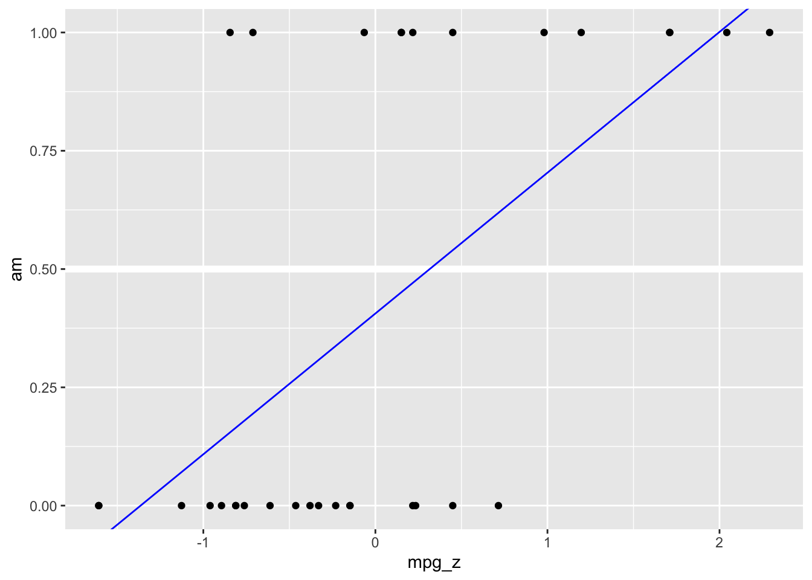

9 Forschungsfragen mit metrischer AV
9.1 Lernsteuerung
9.1.1 Position im Modulverlauf
Abbildung 1.1 gibt einen Überblick zum aktuellen Standort im Modulverlauf.
9.1.2 Lernziele
Nach Absolvieren des jeweiligen Kapitels sollen folgende Lernziele erreicht sein.
Sie können…
- typische, deskriptive Forschungsfragen spezifizieren als Regression
- Forschungsfragen in Regressionsterme übersetzen
- typische Forschungsfragen auswerten
9.1.3 Begleitliteratur
Der Stoff dieses Kapitels orientiert sich an McElreath (2020), Kap. 4.4 sowie Gelman, Hill, und Vehtari (2021), Kap. 7 und 10.
9.1.4 Vorbereitung im Eigenstudium
9.1.5 R-Pakete
In diesem Kapite lwerden folgende R-Pakete benötigt:
9.1.6 Einstieg
Beispiel 9.1 (Was waren noch mal die Skalenniveaus?) Um Forschungsfragen zu klassifizieren, müssen Sie wissen, was die Skalenniveaus der beteiligten AV und der UV(s) sind.1 \(\square\)
Beispiel 9.2 (Was war noch einmal die Interaktion?) Erkären Sie die Grundkonzepte der Interaktion (hier synonym: Moderation) im Rahmen einer Regressionsanalyse!2 \(\square\)
9.1.7 Überblick
Wenn Sie die Skalenniveaus wissen, können Sie die Forschungsfrage korrekt auswerten, also das korrekte (Regressions-)Modell spezifizieren. Wir werden hier viele der typischen Forschungsfragen (aus psychologischen und ähnlichen Fragestellungen) mit Hilfe von Regressionsmodellen beantworten. Das hat den Vorteil, dass sie nicht viele verschiedene Auswertungsmethoden (t-Test, Varianzanalyse, …) lernen müssen. Außerdem ist die Regressionsanalyse (für viele Situationen) die beste Heransgehensweise, da sie viele Möglichkeiten für Erweiterungen bietet. Entsprchend ist das Thema dieses Kapitels gängige Forschungsfragen mit Hilfe der Regressionsanalyse zu untersuchen. Wenn Sie die Grundkonzepte der Regression schon kennen, wird Ihnen vieles sehr bekannt vorkommen. Natürlich würzen wir das Ganze mit einer ordentlichen Portion Post-Verteilungen aus der Bayes-Küche. Allerdings kommt auch dabei nichts Wesentliches mehr hinzu, abgesehen von einer paar Erweiterungen.
9.2 Wissenschaft als Gerechtigkeitsprojekt
üì∫ Teil 1
9.2.1 Meinungen als Grundlage der Konfliktlösung ?
Contra:
- “Ich find Masken doof!”
- “Impfen ist schädlich!”
- “Corona gibt’s gar nicht!”
Pro:
- “Ich find Masken gut!”
- “Impfen ist nützlich!”
- “Corona ist gefährlich!”
Meinungen kennen kein richtig und kein falsch: Meinungen sind keine Fakten. Konflikte können auf Basis von Meinungen nur schwer gelöst werden.
9.2.2 Fakten als Grundlage der Konfliktlösung
Wissenschaft produziert Fakten. Da Fakten universell sind (sein können), ist Wissenschaft potenziell ein Weg zur Konfliktlösung. Warum helfen Fakten bei Konflikten?
Fakten sind neutral gegenüber Personen. Fakten bieten daher eine Chance zur fairen Einigung.
Wann ist ein Fakt ein Fakt?
Fakten müssen vor allem nachprüfbar sein (Daten, Analyse und Bericht müssen offen zugänglich sein).
9.2.3 Beispiel Corona: Datenlage spricht zugunsten der Covid19-Impfung
The effectiveness of full messenger RNA (mRNA) vaccination (≥14 days after the second dose) was 89% (95% confidence interval [CI], 87 to 91) against laboratory-confirmed SARS-CoV-2 infection leading to hospitalization, 90% (95% CI, 86 to 93) against infection leading to an ICU admission, and 91% (95% CI, 89 to 93) against infection leading to an emergency department or urgent care clinic visit.
Thompson u. a. (2021); vgl. auch Nasreen u. a. (2021); Pormohammad u. a. (2021)
Drei Anforderungen an die Qualität von Studien:
- handwerklich gut: z.B. vergleichbare Gruppen, genaue Messinstrumente
- bescheiden: die Forschungsfrage wird nur dann selbstbewusst beantwortet, wenn es die handwerkliche Qualität der Studie zulässt. Gibt es eine Vielzahl weiterer Studien mit abweichenden Ergebnissen, wird dies bei der Beantwortung der Forschungsfrage berücksichtigt.
- transparent: Das Vorgehen, die Hintergründe und Ziele werden offengelegt. Das betrifft auch möglich Befangenheit oder Interessenskonflikte der Autoren und Autorinnen
9.2.4 Psychologische Intervention zur Erhöhung der Impfquote
Dai u. a. (2021) zeigen den Effekt einer psychologischen Intervention zur Erhöhung der Impfquote, s. Abbildung 9.1.
Here we present two sequential randomized controlled trials to test the effect of behavioural interventions on the uptake of COVID-19 vaccines. … We designed text-based reminders that make vaccination salient and easy, and delivered them to participants drawn from a healthcare system one day (first randomized controlled trial) (n = 93,354 participants; clinicaltrials number NCT04800965) and eight days (second randomized controlled trial) (n = 67,092 individuals; clinicaltrials number NCT04801524) after they received a notification of vaccine eligibility. The first reminder boosted appointment and vaccination rates within the healthcare system by 6.07 (84%) and 3.57 (26%) percentage points, respectively; the second reminder increased those outcomes by 1.65 and 1.06 percentage points, respectively. The first reminder had a greater effect when it was designed to make participants feel ownership of the vaccine dose.

9.2.5 Was heißt “ist effektiv”?
Nasreen u. a. (2021) definieren effectivity, \(e\), so:
\[e = 1 - C; C= \frac{n_{vacc|pos}}{n_{vacc|neg}}\]
- \(C\) nennt man das Chancenverhältnis (odds ratio), es beschreibt einen Bruchterm: \(\frac{x}{y}\).
- \(n_{vacc|pos}\): Anzahl der geimpften Personen unter allen Personen mit positiver Corona-Diagnose
- \(n_{vacc|neg}\): Anzahl der geimpften Personen unter allen Personen mit negativer Corona-Diagnose
Beispiel: Von den 100 Personen mit positiver Corona-Diagnose sind 10 geimpft, \(n_{vacc|pos}=10\). Von den 100 Personen mit negativer Corona-Diagnose sind 90 geimpft, \(n_{vacc|neg}=90\)
\[C= \frac{10}{90} = \frac{1}{9}; e = 1 - \frac{1}{9} = \frac{8}{9} \approx 0.88\]
In diesem Beispiel liegt die Effektvitität \(e\) bei knapp 90%.
9.3 Arten von Forschungsfragen
9.3.1 Nach dem Erkenntnisziel
Deskriptiv (beschreibend)
- Wie stark ist der (lineare) Zusammenhang \(r\) von Größe und Gewicht?
- Wie stark ist der (lineare) Zusammenhang \(b\) von Lernzeit und Note?
- Bevorzugen unsere Kunden Webshop A oder B?
Prädiktiv (prognostisch, vorhersagend)
- Wie schwer ist ein deutscher Mann der Größe 1,80m im Schnitt?
- Welche Note kann man erwarten, wenn man nichts für die Klausur lernt?
- Wieviel wird ein Kunde ausgeben, wenn er sich in dieser Variante des Webshops aufhält?
Präskriptiv (erklärend, kausal)
- Ist Größe eine Ursache von Gewicht (bei deutschen Männern)?
- Wenn ich 100 Stunden lerne, welche Note schreibe ich dann?
- Hat die Art des Webshops einen Einfluss auf unseren Umsatz?
Das Erkenntnisziel wissenschaftlicher Studien ist zumeist erklärend. Anhand der verwendeten statistischen Methode (z.B. Regressionsanalyse) kann man nicht feststellen, zu welchem Erkenntnisziel die Studie gehört.
9.3.2 Nach dem Skalenniveau
Wir konzentrieren uns im Folgenden auf Forschungsfragen auf Basis von Regressionsmodellen mit metrischer AV. Andere Skalenniveaus bei der AV klammern wir aus.
Für die UV(s) sind nominale und metrische Skalenniveaus erlaubt. Modelle mit mehreren UV (und mehreren Stufen an UV) sind erlaubt.
9.3.3 Varianten von Forschungsfragen
Im Folgenden sind beispielhafte, häufig verwendete Arten von Forschungsfragen aufgeführt. Für jede Variante ist ein Beispiel, die Modellformel, der Kausalgraph3, die Forschungsfrage sowie die Grundlagen der Auswertung dargestellt.
Dabei wird folgende Nomenklatur verwendet:
-
y: metrische abhängige Variable -
g: Gruppierungsvariable; nominal skalierter unabhängige Variable (querschnittlich) -
b: binäre Variable -
x: metrische unabhängige Variable -
u: ungemessene Variable
9.4 Eine binäre UV
9.4.1 Forschungsfrage
Hintergrund:
Eine Psychologin, die im öffentlichen Dienst als Schulpsychologin arbeitet, versucht herauszufinden, warum einige Kinder intelligenter sind als andere. Dazu wurden in einer aufwändigen Studie die Intelligenz vieler Kinder gemessen. Zusätzliche wurden verschiedene Korrelate der Intelligenz erhoben, in der Hoffnung, “Risikofaktoren” für geringere Intelligenz zu entdecken.
Forschungsfrage:
Unterscheidet sich der mittlere IQ-Wert (
kid_score) von Kindern in Abhängigkeit davon, ob ihre jeweilige Mutter über einen Schlusabschluss (mom_hs, \(x=1\)) verfügt (bzw. nicht, \(x=0\))? (ceteris paribus)4.
Formaler ausgedrückt und als Behauptung (Hypothese) formuliert, sieht die Forschungsfrage so aus (Gleichung 9.1):
\[\mu_{x=1|\alpha, \beta, \sigma} \ne \mu_{x=0|\alpha, \beta, \sigma} \tag{9.1}\]
Die Modellformel zur Forschungsfrage lautet: y ~ b.
Der Kausalgraph zur Modellformel sieht aus in Abbildung 9.2 dargestellt. Y hat, laut unserem Modell, drei Ursachen:
- b
- x
- u, das steht für “unbekannt”5, also für alle sonstigen Einflüsse

y ~ b
9.4.2 IQ von Kindern, binärer Prädiktor
Alternativ können Sie die Daten hier herunterladen.
Mit parameters(m10.1) bekommt man die Parameter des Modells, s. Tabelle 9.1.
| Parameter | Median | 95% CI | pd | Rhat | ESS | Prior |
|---|---|---|---|---|---|---|
| (Intercept) | 77.56 | (73.28, 81.64) | 100% | 1.001 | 3917.00 | Normal (86.80 +- 51.03) |
| mom_hs | 11.80 | (7.18, 16.48) | 100% | 1.001 | 3789.00 | Normal (0.00 +- 124.21) |
In Abbildung 9.3 ist der Unterschied im IQ der Kinder als Funktion des Schlussabschlusses der Mutter dargestellt.

9.4.3 Interpretation von m10.1
m10.1: kid_score = 78 + 12*mom_hs + error
- Der Achsensabschnitt (intercept, \(\beta_0\) oder auch mit \(\alpha\) bezeichnet) ist der mittlere (bzw. vorhergesagte) IQ-Wert von Kindern, deren Mütter über keinen Schulabschluss (
mom_hs = 0) verfügen:
kid_score = 78 + 0*12 + error
- Das Regressionsgewicht (slope, \(\beta\)) ist der Unterschied im IQ-Wert von Kindern mit Mütter mit Schlulabschluss (im Vergleich zum IQ-Wert von Kindern mit Mütter ohne Schlusabschluss). Dieser Unterschied entspricht der Steigung der Regressionsgeraden.
kid_score = 78 + 1*12 + error = 90 + error
- Die Größer der Konfidenzintervalle zeigt, wie genau die Schätzung (Vorhersage) ist bzw. wie stark Prädiktor (UV) und Kriterium (AV) zusammenhängen.
9.4.4 m10.1 als Mittelwertsdifferenz
- UV: binär (zweistufig nominal/kategorial)
- AV: metrisch (quantitativ)
Hey R-Golem! Nimm den Datensatz kidiq, gruppiere nach mom_hs und fasse zusammen anhand des Mittelwerts. Die resultierende Zahl soll heißen kid_score_avg. An die Arbeit!
In der frequentistischen Statistik (die mehrheitlich unterricht wird) untersucht man diese Datensituation mit einem t-Test. Der t-Test ist ein inferenzstatistisches Verfahren, das prüft, ob die Mittelwertsdifferenz (in der Population) \(\mu_d\) Null ist: \(\mu_d = 0\).6 In der Bayes-Statistik betrachtet man dazu stattdessen die Posteriori-Verteilung (z.B. mit 95%PI).
Der mittlere (average, avg) IQ-Wert unterscheidet sich um ca. 12 Punkte (89.4-77.6), zugunsten der Kinder von Müttern mit Abschluss. Allerdings gibt es viel Streuung um die Mittelwerte herum.
9.4.5 Antwort auf die Forschungsfrage, m10.1
Betrachten wir die Ergebnisse von m10.1. Hier sind die ersten paar Zeilen.
| Stichprobe aus der Post-Verteilung | ||
|---|---|---|
| Achsenabschnitt | momhs | sigma |
| 75.9 | 11.5 | 19.3 |
| 78.6 | 10.8 | 21.2 |
| 79.0 | 10.2 | 18.7 |
| 79.1 | 9.5 | 19.8 |
| 80.3 | 8.5 | 19.8 |
Berechnen wir ein 95%-PI von Hand:7
Mit 95% Wahrscheinlichkeit liegt der Unterschied im mittleren IQ-Wert zwischen Kindern von Müttern mit bzw. ohne Schulabschluss im Bereich von 7 bis 14 IQ-Punkten, laut unserem Modell: \(95\%PI: [7,16]\). Die Hypothese, dass es keinen Unterschied oder einen Unterschied in die andere Richtung geben sollte, ist vor diesem Hintergrund als unwahrscheinlich abzulehnen.
Visualisieren wir abschließend die Posteriori-Verteilung, s. Abbildung 9.4.
plot(eti(m10.1))
Zur Einnerung: Korrelation ungleich Kausation. Von einem “Effekt” zu sprechen, lässt in den meisten Köpfen wohl die Assoziation zu einem kausalen Effekt entstehen. Ein Kausaleffekt ist eine starke (und sehr interessante und wichtige) Behauptung, die mehr Fundierung bedarf als eine einfache Korrelation bzw. ein einfacher Zusammenhang.
9.4.6 Variante zur Forschungsfrage
Unsere Psychologin könnte auch folgende Hypothese formulieren:
Die Wahrscheinlichkeit für ein Kind mit guten Testwerten (y) ist höher, wenn die Mutter über einen Schulabschluss verfügt.
Präziser formuliert:
\[Pr(y > 100|x=1, \alpha, \beta, \sigma) > Pr(y > 100|x=0, \alpha, \beta, \sigma)\]
Der vertikale Balken “|” liest sich als “gegeben, dass”. Hier wird auf die Wahrscheinlichkeit für ein Testergebnis \(y>100\), gegeben, dass die Mutter über einen Schulabschluss verfügt (\(x=1\)) und gegeben der Modellparameter \(\alpha, \beta, \sigma\).
9.5 Eine metrische plus eine nominale UV
9.5.1 Forschungsfrage
Wie stark ist der statistische Effekt von jeweils Schulabschluss der Mutter (
mom_hs) und IQ der Mutter (mom_iq) auf den IQ des Kindes (kid_score) ?
Die Modellformel zur Forschungsfrage lautet: y ~ x + b.
Der Kausalgraph8 zur Modellformel sieht aus in Abbildung 9.5 dargestellt. Laut unserem Modell ist y also eine Funktion zweier (kausaler) Einflüsse, b und u, wobei u für “unbekannt” steht, also für alle sonstigen Einflüsse.9

y ~ b
Deskriptive Statistiken zum Datensatz sind in Tabelle Tabelle 9.2 dargestellt.
data("kidiq") # Paket rstanarm, alternativ über CSV einlesen
describe_distribution(kidiq)| Variable | Mean | SD | IQR | Range | Skewness | Kurtosis | n | n_Missing |
|---|---|---|---|---|---|---|---|---|
| kid_score | 86.80 | 20.41 | 28.00 | (20.00, 144.00) | -0.46 | -0.16 | 434 | 0 |
| mom_hs | 0.79 | 0.41 | 0.00 | (0.00, 1.00) | -1.40 | -0.05 | 434 | 0 |
| mom_iq | 100.00 | 15.00 | 21.67 | (71.04, 138.89) | 0.47 | -0.57 | 434 | 0 |
| mom_age | 22.79 | 2.70 | 4.00 | (17.00, 29.00) | 0.18 | -0.63 | 434 | 0 |
9.5.2 1 metrischer Prädiktor
Berechnen wir folgendens Modell: kid_score ~ mom_iq (m10.2), s. Tab. Tabelle 9.3.
| Parameter | Median | 95% CI | pd | Rhat | ESS | Prior |
|---|---|---|---|---|---|---|
| (Intercept) | 25.78 | (14.04, 36.99) | 100% | 1.000 | 3518.00 | Normal (86.80 +- 51.03) |
| mom_iq | 0.61 | (0.50, 0.73) | 100% | 1.000 | 3486.00 | Normal (0.00 +- 3.40) |
kid_score = 26 + 0.6 * mom_iq + error
Visualisieren wir uns noch das Modell m10.2, s. Abbildung 9.6.
kidiq %>%
ggplot(aes(x = mom_iq, y = kid_score)) +
geom_point(alpha = .7) +
geom_abline(slope = coef(m10.2)[2],
intercept = coef(m10.2)[1],
color = "blue")
Alternativ kann man sich - einfacher - das Modell (m10.2) so visualisieren, mit Hilfe des R-Pakets easystats, s. Abbildung 9.7.
plot(estimate_expectation(m10.2))
Die Linie zeigt die vorhergesagten IQ-Werte der Kinder für verschiedene IQ-Werte der Mütter. Vergleicht man Teilpopulationen von Müttern mit mittleren Unterschied von einem IQ-Punkt, so findet man 0.6 IQ-Punkte Unterschied bei ihren Kindern im Durchschnitt, laut dem Modell m10.2. Der Achsenabschnitt hilft uns nicht weiter, da es keine Menschen mit einem IQ von 0 gibt.
9.5.3 Beide Prädiktoren, m10.3
Berechnen wir als nächstes ein Modell mit beiden Prädiktoren: kid_score ~ mom_hs + mom_iq, s. Tabelle 9.4.
m10.3 <-
stan_glm(
kid_score ~ mom_iq + mom_hs,
refresh = 0,
seed = 42,
data = kidiq)| Parameter | Median | 95% CI | pd | Rhat | ESS | Prior |
|---|---|---|---|---|---|---|
| (Intercept) | 25.74 | (13.87, 36.76) | 100% | 1.001 | 3961.00 | Normal (86.80 +- 51.03) |
| mom_iq | 0.57 | (0.45, 0.69) | 100% | 1.001 | 3456.00 | Normal (0.00 +- 3.40) |
| mom_hs | 6.04 | (1.62, 10.15) | 99.60% | 0.999 | 3616.00 | Normal (0.00 +- 124.21) |
Will man nur schnell die Koeffizienten des Modells (d.h. Punktschätzer der Modellparametern, in diesem Fall den Median) wissen, so kann man anstelle von parameters(mein_modell) auch coef(mein_modell) schreiben:
coef(m10.3)
## (Intercept) mom_iq mom_hs
## 25.7447712 0.5654851 6.0376396m10.3: kid_score = 26 + mom_hs + 0.6*mom_iq + error
Möchte man nur z.B. den 3. Wert aus diesem Vektor, so kann man schreiben:
coef(m10.3)[3]
## mom_hs
## 6.03764Aber natürlich ist es möglich (und einfacher) anstelle von coef den Befehl parameters zu verwenden.
Und die Visualisierung des Modells m10.3, s. Abbildung 9.8.
kidiq2 <-
kidiq %>%
mutate(mom_hs = as.factor(mom_hs))
m10.3a <-
stan_glm(
kid_score ~ mom_iq + mom_hs,
refresh = 0,
seed = 42,
data = kidiq2)
plot(estimate_expectation(m10.3a))
- Achsenabschnitt: Hat das Kind eine Mutter mit einem IQ von 0 und ohne Schulabschluss, dann schätzt das Modell den IQ-Wert des Kindes auf 26.
- Koeffizient zum mütterlichen Schulabschluss: Vergleicht man Kinder von Müttern gleicher Intelligenz, aber mit Unterschied im Schulabschluss, so sagt das Modell einen Unterschied von 6 Punkten im IQ voraus.
- Koeffizient zur mütterlichen IQ: Vergleicht man Kinder von Müttern mit gleichem Wert im Schulabschluss, aber mit 1 IQ-Punkt Unterschied, so sagt das Modell einen Unterschied von 0.6 IQ-Punkten bei den Kindern voraus.
9.6 Interaktion
In m10.3 hat das Modell die Regressionsgeraden gezwungen, parallel zu sein. Betrachtet man das Streudiagramm, so sieht man, das nicht-parallele Geraden besser passen. Sind die Regressionsgeraden nicht parallel, so spricht man von einer Interaktion (synonym: Interaktionseffekt, Moderation).
Liegt eine Interaktion vor, so unterscheidet sich die Steigung der Geraden in den Gruppen. Liegt keine Interaktion vor, so sind die Geraden parallel.\(\square\)
Wir berechnen mit m10.4 folgendes Modell: kid_score ~ mom_hs + mom_iq + mom_hs:mom_iq, s. Abbildung 9.9 und Tabelle 9.5.
m10.4 <-
stan_glm(kid_score ~ mom_hs + mom_iq + mom_hs:mom_iq,
seed = 42,
data = kidiq,
refresh = 0)| Parameter | Median | 95% CI | pd | Rhat | ESS | Prior |
|---|---|---|---|---|---|---|
| (Intercept) | -10.10 | (-37.00, 17.79) | 77.10% | 1.000 | 1416.00 | Normal (86.80 +- 51.03) |
| mom_hs | 49.01 | (20.09, 79.88) | 99.85% | 1.000 | 1438.00 | Normal (0.00 +- 124.21) |
| mom_iq | 0.95 | (0.65, 1.24) | 100% | 1.000 | 1362.00 | Normal (0.00 +- 3.40) |
| mom_hs:mom_iq | -0.46 | (-0.78, -0.15) | 99.75% | 1.000 | 1388.00 | Normal (0.00 +- 1.16) |

Die Modellformel zur Forschungsfrage lautet: y ~ x + b + x:b.
Der DAG zur Modellformel sieht aus in Abbildung 9.10 dargestellt.

y ~ x + b + x:b
9.6.1 Interpretation von m10.4
- Achsenabschnitt: IQ-Schätzwerte für Kinder mit Mütter ohne Abschluss und mit einem IQ von 0. Kaum zu interpretieren.
-
mom_hs: Unterschied der IQ-Schätzwerte zwischen Kindern mit Mutter ohne bzw. mit Schulabschluss und jeweils mit einem IQ von 0. Puh. -
mom_iq: Unterschied der IQ-Schätzwerte zwischen Kindern mit Müttern, die sich um einen IQ-Punkt unterscheiden aber jeweils ohne Schulabschluss. -
Interaktion: Der Unterschied in den Steigungen der Regressiongeraden, also der Unterschied des Koeffizienten für
mom_iqzwischen Mütter mit bzw. ohne Schulabschluss.
mom_hs=0:
kid_score = -11 + 51*0 + 1.1* mom_iq + 0.5*0*mom_iq
= -11 + 1.1*mom_iq
mom_hs=1:
kid_score = -11 + 51*1 + 1.1* mom_iq + 0.5*1*mom_iq
= 40 + 0.6*mom_iqGelman, Hill, und Vehtari (2021), Kap. 10.3
9.6.2 Nach der Interpretation von 20 unzentrierten Koeffizienten
9.7 Zentrieren von Prädiktoren
Unter Zentrieren (to center) versteht man das Bilden der Differenz eines Messwerts zu seinem Mittelwert. Zentrierte Werte geben also an, wie weit ein Messwert vom mittleren (typischen) Messwert entfernt ist. Mit zentrierten Werten ist eine Regression einfacher zu interpretieren. Hier zentrieren wir (nur) mom_iq.
Man könnte auch mom_hs zentrieren, aber für eine einfache Interpretation ist es meist nützlich, nur metrische Prädiktoren zu zentrieren.
| Parameter | Median |
|---|---|
| (Intercept) | 85.31 |
| mom_hs | 2.91 |
| mom_iq_c | 0.97 |
| mom_hs:mom_iq_c | -0.48 |
9.7.1 Interpretation von m10.5
- Der Achsenabschnitt (
Intercept) gibt den geschätzten IQ des Kindes an, wenn man eine Mutter mittlerer Intelligenz und ohne Schulabschluss betrachtet. -
mom_hsgibt den Unterschied im geschätzten IQ des Kindes an, wenn man Mütter mittlerer Intelligenz aber mit bzw. ohne Schlusabschluss vergleicht. -
mom_iq_cgibt den Unterschied im geschätzten IQ des Kindes an, wenn man Mütter ohne Schlusabschluss aber mit einem IQ-Punkt Unterschied vergleicht. -
mom_hs:mom_iq_cgibt den Unterschied in den Koeffizienten fürmom_iq_can zwischen den beiden Grupen vonmom_hs.
m10.5 ist in Abbildung 9.11 dargestellt.

9.7.2 Zentrieren ändert nichts an den Vorhersagen
Betrachten wir die Vorhersagen von m10.4:
new <- tibble(mom_hs = 0, mom_iq = mean(kidiq$mom_iq))
pred_new <- posterior_predict(m10.4, newdata = new)
mean(pred_new)
## [1] 85.49767Und vergleichen wir mit diesen die Vorhersagen von m10.5:
new <- tibble(mom_hs = 0, mom_iq_c = 0)
pred_new <- posterior_predict(m10.5, newdata = new)
mean(pred_new)
## [1] 85.22939Wir sehen, die Vorhersagen sind (bis auf Rundungsfehler) identisch.
Auch die Streuungen der vorhergesagten Werte unterscheiden sich nicht (wirklich): \(\sigma_{m10.4}= 18\); \(\sigma_{m10.5}= 18\).
Das Zentrieren ändert auch nicht die Regressionskoeffizienten, da die Streuungen der Prädiktoren nicht verändert wurden.
9.7.3 Perzentilintervalle aus der Posterori-Verteilung
Tabelle 9.6 zeigt die Punktschätzer der Parameter für m10.5 sowie ihre Perzentilintervalle10. Nutzen Sie dafür parameters(m10.5), s. Tabelle 9.6.
| Parameter | Median | 95% CI | pd | Rhat | ESS | Prior |
|---|---|---|---|---|---|---|
| (Intercept) | 85.31 | (80.99, 89.72) | 100% | 1.001 | 2610.00 | Normal (86.80 +- 51.03) |
| mom_hs | 2.91 | (-1.89, 7.69) | 88.00% | 1.001 | 2832.00 | Normal (0.00 +- 124.21) |
| mom_iq_c | 0.97 | (0.67, 1.24) | 100% | 1.002 | 1982.00 | Normal (0.00 +- 3.40) |
| mom_hs:mom_iq_c | -0.48 | (-0.78, -0.16) | 99.78% | 1.002 | 1992.00 | Normal (0.00 +- 3.87) |
Highest Density (Posterior) Intervalle (HDI oder HDPI) kann man sich komfortabel ausgeben lassen mit hdi(m10.5) oder mit parameters(m10.5, ci_method = "hdi"), s. Tabelle 9.7.
parameters(m10.5, ci_method = "hdi") %>%
display()| Parameter | Median | 95% CI | pd | Rhat | ESS | Prior |
|---|---|---|---|---|---|---|
| (Intercept) | 85.31 | (81.26, 89.88) | 100% | 1.001 | 2610.00 | Normal (86.80 +- 51.03) |
| mom_hs | 2.91 | (-1.89, 7.70) | 88.00% | 1.001 | 2832.00 | Normal (0.00 +- 124.21) |
| mom_iq_c | 0.97 | (0.68, 1.24) | 100% | 1.002 | 1982.00 | Normal (0.00 +- 3.40) |
| mom_hs:mom_iq_c | -0.48 | (-0.79, -0.17) | 99.78% | 1.002 | 1992.00 | Normal (0.00 +- 3.87) |
Im Falle symmetrischer Posteriori-Verteilungen (wie hier) kommen beide Arten von Intervallen zu gleichen Ergebnissen.
9.7.4 Beantworten der Forschungsfrage
Das Model zeigt keine Belege, dass sich die mittlere Intelligenz von Kindern bei Müttern mit bzw. ohne Schlusabluss unterscheidet (95%PI: [-2.0, 7.8]). Hingegen fand sich ein Effekt der mütterlichen Intelligenz; pro Punkt Unterschied in müttlerlichem IQ fand sich ein Unterschied von 0.7 bis 1.3 IQ-Punkte (95%PI). Außerdem fand sich ein Beleg, dass der Zusammenhang des IQ zwischen Mutter und Kind durch den Schulabschluss moderiert wird: Bei Mütter mit Schulabschluss war der Zusammenhang zwischen Mutter-IQ und Kind-IQ geringer (95%PI: [-0.80, -0.17]).
Das Modell macht keine kausalen Aussagen. Es werden lediglich Unterschiede bzw. Zusammenhänge beschrieben. Für kausale Aussagen ist mehr nötig, als einen statistischen Zusammenhang festzustellen.
9.8 Eine nominale UV mit mehreren Stufen
9.8.1 Forschungsfrage
Hintergrund:
Nach Ihrem Studium wurden Sie reich als Unternehmensberater:in; Ihre Kompetenz als Wirtschaftspsychologi war heiß begehrt. Von Statistik wollte niemand etwas wissen… Doch nach einiger Zeit kamen Sie in eine Sinnkrise. Sie warfen Ihre Job hin und beschlossen, in die Wissenschaft zu gehen. Kurz entschlossen bewarben Sie sich auf das erste Stellenangebot als Nachwuchswissenschaftler:in.
Ihr Forschungsprojekt führte Sie in die Antarktis… Nun, das war zumindest ein Gegenentwurf zu Ihrem bisherigen Jet-Set-Leben.
Ihre Aufgabe bestand nun darin, Pinguine zu untersuchen. Genauer gesagt ging es um Größenunterschiede zwischen drei Pinguinarten. Ja, stimmt, an so ein Forschungsprojekt hatten Sie vorher nie auch nur nur im Traum gedacht.
Unterscheiden sich die mittleren Körpergewichte der drei Pinguinarten?
Die Modellformel zur Forschungsfrage lautet: y ~ g.
Der DAG zur Modellformel sieht aus in Abbildung 9.12 dargestellt.

y ~ g
9.8.2 Alle Mittelwerte sind gleich, exakt gleich (?)
Formal: \(\mu_1 = \mu_2 = \ldots = \mu_k\) mit \(k\) verschiedenen Gruppen von Pinguinarten.
Hypothesen, die keinen (Null) Unterschied zwischen Gruppen oder keinen Zusammenhang zwischen Variablen postulieren, kann man als Nullhypothesen bezeichnen.
Moment. Dass sich alle Mittelwerte um 0,00000000 unterscheiden, ist wohl nicht zu vermuten. Wer glaubt sowas? ü§î Daher ist die bessere Forschungsfrage:
Wie sehr unterscheiden sich mittlere Körpergewichte in Abhängigkeit von der Pinguinart?
Alternativ können wir die Hypothese prüfen, ob die Mittelwerte “praktisch” gleich sind, also sich “kaum” unterscheiden. Der Grenzwert für “praktisch gleich” bzw. “kaum unterschiedlich” ist subjektiv. Dazu in Kapitel 9.11 mehr.
9.8.3 Erster Blick in den Datensatz penguins

Datenquelle, Beschreibung des Datensatzes
Sie können die Daten entweder via dem Pfad importieren:
penguins_url <- "https://vincentarelbundock.github.io/Rdatasets/csv/palmerpenguins/penguins.csv"
penguins <-
read.csv(penguins_url)Oder via dem zugehörigen R-Paket:
data("penguins", package = "palmerpenguins")Hier ist die Verteilung des Gewichts jeder Spezies im Datensatz, Tabelle 9.8.
Was fällt Ihnen auf?
9.8.4 Visualisierung (EDA)
Hier kommen die Pinguine! Wie schwer sind die Tiere in unserer Stichprobe, s. Abbildung 9.13?

9.8.5 Mittlere Gewichtsunterschiede in der Population
Berechnen wir das mittlere Gewicht pro Spezies (Gruppe) der Pinguine, s. m10.6 und Tabelle 9.9.
options(mc.cores = parallel::detectCores()) # Turbo einschalten
m10.6 <- stan_glm(body_mass_g ~ species,
data = penguins,
refresh = 0, # unterdrückt Ausgabe der Posteriori-Stichproben
seed = 42 # zur Reproduzierbarkeit
)
m10.6 %>% parameters()| Parameter | Median | 95% CI | pd | Rhat | ESS | Prior |
|---|---|---|---|---|---|---|
| (Intercept) | 3699.92 | (3624.56, 3776.46) | 100% | 1.001 | 4194.00 | Normal (4201.75 +- 2004.89) |
| speciesChinstrap | 32.24 | (-100.80, 159.99) | 69.92% | 1.000 | 4266.00 | Normal (0.00 +- 5015.92) |
| speciesGentoo | 1374.94 | (1265.80, 1486.83) | 100% | 1.001 | 4187.00 | Normal (0.00 +- 4171.63) |
9.8.6 Interpretation von m10.6
Die UV hat drei verschiedene Stufen (Werte, Ausprägungen; hier: Spezies), aber es werden in Tabelle 9.9 nur zwei Stufen angezeigt (also eine weniger) zusätzlich zum Achsenabsdhnitt. Die fehlende Stufe (Adelie, nicht ausgegeben) ist die Vergleichs- oder Referenzkategorie (baseline) und ist im Achsenabschnitt ausgedrückt (Intercept). Die Koeffizienten für species geben jeweils den (vorhergesagten) Unterschied zur Vergleichskategorie wieder. Pinguine der Spezies Adelie haben laut Modell ein mittleres Gewicht von ca. 3700g. Pinguine der Spezies Gentoo sind laut Modell im Mittel gut 1000g schwerer als Pinguine der Spezies Adelie, etc.
Der Unterschied im mittleren Gewicht von den Gruppen Chinstrap und Gentoo zur Referenzgruppe (Adelie) ist in Abbildung 9.14 verdeutlicht.
plot(hdi(m10.6)) + scale_fill_okabeito()
Das Farbschema nach Okabe und Ito ist gut geeignet, um nominal skalierte Farben zu kodieren (d. Details hier).
9.8.7 Glauben wir jetzt an Gruppeneffekte?
Glauben wir jetzt, auf Basis der Modellparameter, an Unterschiede (hinsichtlich der AV) zwischen den Gruppen (UV)?
Es scheinen sich nicht alle Gruppen voneinander zu unterscheiden. So ist der Mittelwert der Gruppe Gentoo deutlich höher als der der beiden anderen Gruppen. Umgekehrt sind sich die Pinguinarten Adelie und Chinstrap in ihren Mittelwerten ziemlich ähnlich.
Wie in Abbildung 9.14 ersichtlich, überlappt sich der Schätzbereich für den Parameter von Gentoo nicht mit der Null; hingegen überlappt sich der Schätzbereich des Parameters für Chinstrap deutlich mit der Nullinie.
Auf Basis unseres Modells verwerfen wir die also (mit hoher Sicherheit) die Hypothese, dass alle Mittelwerte exakt identisch sind.
Ehrlicherweise hätte sowieso (fast) niemand geglaubt, dass die exakte Nullhypothese \(\mu_1 = \mu_2 = \ldots = \mu_k\) bis in die letzte Dezimale gilt. Anders gesagt: Die Wahrscheinlichkeit eines bestimmten Wertes einer stetigen Zufallsvariable ist praktisch Null. Aber: Viele Forschis prüfen gerne die Nullhypothese, daher diskutieren wir den Begriff der (exakten) Nullhypothese. Das Verfahren der Frequentistischen Statistik, um die Nullhypothese \(\mu_1 = \mu_2 = \ldots = \mu_k\) zu testen, nennt man Varianzanalyse (analysis of variance, kurz ANOVA). In der Bayes-Statistik nutzt man - wie immer - primär die Post-Verteilung, um Fragen der Inferenz (z.B. Gruppenunterschiede dieser Art) inferenzstatistisch zu beurteilen.
9.9 Priori-Werte
Unser Modell m10.6 hat schwach informierte (weakly informative) Priors. Für Achsenabschnitt und die Regressionskoeffizienten trifft unser Golem Stan folgende Annahmen in der Voreinstellung:
- Achsenabschnitt und Regressionsgewichte werden als normalverteilt angenommen
- mit Mittelwert entsprechend den Stichprobendaten
- und einer Streuung des Mittelwerts, die der 2.5-fachen der Streuung in der Stichprobe entspricht
- für Sigma wird eine Exponentialverteilung mit Rate \(\lambda=1\) angenommen, skaliert mit der Streuung der AV.
Mehr Infos kann man sich so ausgeben lassen: prior_summary(modell):
prior_summary(m10.6)
## Priors for model 'm10.6'
## ------
## Intercept (after predictors centered)
## Specified prior:
## ~ normal(location = 4202, scale = 2.5)
## Adjusted prior:
## ~ normal(location = 4202, scale = 2005)
##
## Coefficients
## Specified prior:
## ~ normal(location = [0,0], scale = [2.5,2.5])
## Adjusted prior:
## ~ normal(location = [0,0], scale = [5015.92,4171.63])
##
## Auxiliary (sigma)
## Specified prior:
## ~ exponential(rate = 1)
## Adjusted prior:
## ~ exponential(rate = 0.0012)
## ------
## See help('prior_summary.stanreg') for more detailsWo man man über mehr inhaltliches Wissen verfügt, so wird man die Prioris anpassen wollen, z.B.:
m10.6b <- stan_glm(
body_mass_g ~ species,
data = penguins,
refresh = 0,
seed = 42,
prior = normal(location = c(0, 0), # betas, Mittelwert
scale = c(500, 500)), # betas, Streuung
prior_intercept = normal(3000, 500), # Achsenabschnitt, Mittelwert und Streuung
prior_aux = exponential(0.001)
)
coef(m10.6b)
## (Intercept) speciesChinstrap speciesGentoo
## 3703.90575 26.67909 1360.23645Anstelle von Rohwerten (hier Angabe von Gramm Gewicht) kann man die Streuung auch in z-Werten eingeben, das macht es etwas einfacher. Dazu gibt man bei dem oder den entsprechenden Parametern den Zusatz autoscale = TRUE an.
m10.6c <- stan_glm(
body_mass_g ~ species,
data = penguins,
refresh = 0,
seed = 42,
prior = normal(location = c(0, 0), # betas, Mittelwert
scale = c(2.5, 2.5), # betas, Streuung
autoscale = TRUE), # in z-Einheiten
prior_intercept = normal(4200, 2.5, # Achsenabschnitt, Mittelwert und Streuung
autoscale = TRUE),
prior_aux = exponential(1, autoscale = TRUE)
)
coef(m10.6c)
## (Intercept) speciesChinstrap speciesGentoo
## 3700.98554 30.95782 1375.37494Den Parameter für die Streuung des Modells, \(\sigma\), kann man sich mit sigma(modell) ausgeben lassen:
sigma(m10.6b)
## [1] 462.6415Implizit bekommt man die Informationen zu \(\sigma\) mitgeteilt durch die Größe der Konfidenzintervalle.
Übrigens macht es meistens keinen Sinn, extrem weite Prioris zu definieren11.
9.9.1 Wechsel der Referenzkategorie
species ist eine nominale Variable, da passt in R der Typ factor (Faktor) am besten. Aktuell ist der Typ noch character (Text):
Im Standard sortiert R die Faktorstufen alphabetisch, aber man kann die Reihenfolge ändern.
levels(penguins$species)
## [1] "Adelie" "Chinstrap" "Gentoo"Setzen wir Gentoo als Referenzkategorie und lassen die restliche Reihenfolge, wie sie ist:
Beachten Sie, dass dazu das Paket forcats verfügbar sein muss.
Jetzt haben wir die Referenzkategorie geändert:
levels(penguins$species)
## [1] "Gentoo" "Adelie" "Chinstrap"Der Wechsel der Referenzkategorie ändert nichts Wesentliches am Modell, s. Tabelle 9.10.
m10.6a <- stan_glm(body_mass_g ~ species, data = penguins, refresh = 0)
hdi(m10.6a)| Parameter | 95% HDI |
|---|---|
| (Intercept) | [ 5001.08, 5160.63] |
| speciesAdelie | [-1477.80, -1264.23] |
| speciesChinstrap | [-1475.95, -1204.52] |
9.10 Modellgüte mit R-Quadrat bestimmen
9.10.1 Modellgüte mit \(R^2\) bestimmen
\(R^2\) gibt den Anteil der Gesamtvarianz (der AV) an, den das Modell erklärt. - Höhere Wert von \(R^2\) bedeuten, dass das Modell die Daten besser erklärt. \(R^2\) wird normalerweise auf Basis eines Punktschätzers definiert. Solch eine Definition lässt aber viel Information - über die Ungewissheit der Schätzung - außen vor. Daher ist es wünschenswert, diese Information in \(R^2\) einfließen zu lassen: Bayes-R-Quadrat.
r2(m10.6)
## # Bayesian R2 with Compatibility Interval
##
## Conditional R2: 0.668 (95% CI [0.618, 0.712])Möchte man es ausführlicher, und im Komfort einer Bayes-Analyse schwelgen, so kann man sich die Posteriori-Verteilung von \(R2\) ausgeben lassen, s. Abbildung 9.15.

9.10.2 Definition vom “klassischen” \(R^2\)
Wie genau sind die Vorhersagen des Modells? \(\sigma\) (Vorhersagefehler) quantifiziert die Streuung der Residuen \(r_i = y_i - X_i\hat{\beta}\), mit \(\hat{y}_i = X_i\hat{\beta}\). Anders gesagt: \(\hat{y} = \beta_0 + \beta_1x_1 + \beta_2x_2 + \cdots = X\hat{\beta}\). Anders gesagt gibt \(\sigma\) die “typische” Abweichung einer Beobachtung vom vorhergesagten Wert an. Es ist nützlich, \(\sigma\) in Bezug zu setzen zur Streuung der AV, \(sd_y=s_y\): \(R^2 = 1- (\hat{\sigma}^2/s^2_y)\). \(R2\) gibt damit den Anteil der vom Modell erklärten Varianz, \(V\), an. Berechnet man das Modell mit der Methode der kleinsten Quadrate (nicht mit Bayes), dann ist der obige Ausdruck äquivalent zu: \(R^2=V_{i=1}^n \hat{y}_i/s_y^2\) Die beiden obigen Ausdrücke nehmen \(\hat{y}_i\) als fix (sicher) an und vernachlässigen Ungewissheit; sie sind übergewiss aus Bayes-Sicht.
9.10.3 Bayes’ \(R^2\)
Besser ist es (aus Bayes-Sicht), die Ungewissheit der Vorhersagen bei der Berechnung der Modellgüte miteinzubeziehen: \(\text{Bayes }R^2 = \frac{\text{erkärte Varianz}}{\text{Erklärte Varianz + Residualvarianz}}= \frac{V_{mod}}{V_{mod} + V_{res}}\).
\(V_{mod}\) ist die Varianz in der PPV mit \(s = 1, \ldots, S\) simulierten Stichproben, \(V(\hat{y}_i)\) und \(V_{res}\) ist die Residualvarianz im Modell. Für jede Stichprobe \(s\) berechnet man die vorhergesagten Werte, \(\hat{y}_i^s\), die Residualvarianz \(\sigma^2_s\) und den Anteil der erklärten Varianz: \(\text{Bayes }R^2_s = \frac{V(\hat{y}_i^s)}{V(\hat{y}_i^s+\sigma_s^2)}\), vgl. Gelman u. a. (2019), Gelman, Hill, und Vehtari (2021), Kap. 11.7.
9.11 Nullhypothesen sind praktisch immer falsch
üì∫ Teil 2
Nullhypothesen sind fast immer falsch, s. Abbildung 9.16.

Quelle: Imgflip Meme Generator
We do not generally use null hypothesis significance testing in our own work. In the fields in which we work, we do not generally think null hyptheses can be true: in social science and public health, just about every treatment one might consider will have some effect, and no comparison or regression coefficient of interest will be exactly zero. We do not find it particularly helpful to formulate and test null hypothess that we knowe ahead of time cannot be true.
Gelman, Hill, und Vehtari (2021)
9.11.1 Alternativen zu Nullhypothesen
Nullhypothesen, \(H_0\), sind z.B.: \(\rho=0\), \(\rho_1 = rho_2\), \(\mu_1 = \mu_2\), \(\mu=0\), \(\beta_1=0\). Nullhypothesen zu testen, ist sehr verbreitet. Ein Grund ist, dass in der Frequentistischen Statistik keine andere Art von Hypothesentest möglich ist12
Ein anderer Grund ist vermutlich, … wir haben es schon immer so gemacht.
Alternativen zum Testen von Nullhypothesen sind:
- Posteriori-Intervalle (PI oder HDI) berichten
- Rope-Konzept (Kruschke 2018)
- Wahrscheinlichkeit von inhaltlich bedeutsamen Hypothesen quantifizieren.
- Wahrscheinlichkeit quantifizieren, dass der Effekt ein positives bzw. ein negatives Vorzeichen hat.
9.11.2 “Praktisch” kein Unterschied: Das Rope-Konzept
üì∫ ROPE-Video
Sagen wir, wenn sich zwei Preismittelwerte um höchstens \(d=100\)€ unterscheiden, gilt dieser Unterschied für uns als “praktisch gleich”, “praktisch kein Unterschied” bzw. vernachlässigbar. Nimmt man (praktisch) keinen Unterschied/Zusammenhang/Effekt an, spricht man von einer Nullhypothese: \(H_0\). Die Wahl von \(d\) ist subjektiv in dem Sinne als sie von inhaltlichen Überlegungen geleitet sein sollte. Diesen Bereich bezeichnen wir den Indifferenzbereich (Äquivalenzzone, Bereich eines vernachlässigbaren Unterschieds oder Region of practical equivalence, Rope). Jetzt prüfen wir, ob ein “Großteil” der Posteriori-Stichproben im Rope liegt. Unter “Großteil” wird häufig das 95%-HDI verstanden (das ist auch der Standard der R-Funktion rope(), die wir hier nutzen).
Entscheidungsregel nach Kruschke (2018):
- Großteil liegt innerhalb von Rope ➡️ Annahme der Nullhypothese “praktisch kein Effekt”, \(H_0\)
- Großteil liegt außerhalb von Rope ➡️ Ablehnung der Nullhypothese “praktisch kein Effekt”, \(H_0\)
- Ansonsten ➡️ keine Entscheidung
9.11.3 HDI-Rope-Entscheidungsregel visualisiert

Abbildung 9.17 illustriert die Entscheidungsregel zum ROPE für mehrere Situatioenen (Kruschke 2018, Abb. 1, S. 272):
- Liegt das HDI komplett außerhalb des ROPE, verwirft man die Nullhypothese.
- Liegt das HDI komplett innerhalb des ROPE, akzeptiert man die Nullhypothese.
- Ansonsten ist keine Entscheidung möglich; die Datenlage ist unklar.
9.11.4 Rope berechnen
Den Rope berechnet man mit rope(model).
rope(m10.6)Die Faktorstufe Chinstrap von species hat doch einen beträchtlichen Teil ihrer Wahrscheinlichkeitsmasse der Posteriori-Verteilung im ROPE.
Wir können daher für diese Gruppe das ROPE nicht verwerfen.
Aber: Gentoo liegt zu 0% im Rope. Für Gentoo können wir das Rope verwerfen.
Das hört sich abstrakt an? Dann lassen Sie uns das lieber visualisieren.
Die angegebenen Prozentwerte beziehen sich nicht auf die 100% der Post-Verteilung, sondern (in der Voreinstellung) auf das 95%-ETI, s. help(rope).
9.11.5 Visualisierung unserer Rope-Werte, m10.6
- Ein Großteil der Posteriori-Masse von
m10.6liegt nicht innerhalb des Rope. - Aber können wir umgekehrt sagen, dass ein Großteil außerhalb liegt? Das erkennt man optisch ganz gut.
plot(rope(m10.6)) + scale_fill_okabeito()Das ROPE druchkreuzt die “Berge” der Posteriori-Verteilung für Chinstrap deutlich. Aber: Das 95%-HDI liegt nicht komplett innerhalb des Rope. Wir können das Rope für Chinstrap nicht verwerfen, aber auch nicht bestätigen.
Gentoo hingegen wird vom vom Rope nicht durchkreuzt, es ist weit entfernt vom “blauen Fluss” des Rope: Gentoo liegt außerhalb des Rope. Es gibt einen “substanziellen” Unterschied, größer als das ROPE. Wir verwerfen die “Praktisch-Null-Hypothese” in diesem Fall.
9.11.6 Finetuning des Rope
Wir können festlegen, was wir unter “praktischer Äquivalenz” verstehen, also die Grenzen des Ropes verändern. Sagen wir, 100 Gramm sind unsere Grenze für einen vernachlässigbaren Effekt, s. Abbildung 9.18.

Im Standard werden 95%-HDI berichtet, das kann man so ändern, wenn man möchte:
rope(m10.6, range = c(-100,100), ci = .89, ci_method = "ETI")ETI (equal tails interval) steht für ein PI. Jetzt wird berichtet, welcher Teil eines 89%-CI sich im Rope befindet.
9.11.7 Beantwortung der Forschungsfrage
Für die Spezeis Gentoo wurde ein substanzieller Gewichtsunterschied zur Referenzgruppe, Adelie, vom Modell entdeckt. Für Chinstrap hingegen ist keine klare inferenzstatistische Aussage hinsichtlich eines Indifferenzbereichs möglich: Es ist plauibel, laut dem Modell, dass es einen praktisch bedeutsamen Unterschied gibt, aber es ist auch plausibel, dass es keinen praktisch bedeutsamen Unterschied gibt.
9.12 Mehrere metrische UV
9.12.1 Forschungsfrage
Stehen sowohl der IQ der Mutter als auch, unabhängig davon, das Alter der Mutter im Zusammenhang mit dem IQ des Kindes?
- Das ist wieder eine deskriptive Forschungsfrage. Keine Kausalwirkung (etwa “IQ der Mutter ist die Ursache zum IQ des Kindes”) wird impliziert.
- Es geht rein darum, Zusammenhänge in den Daten - bzw. in der Population - aufzuzeigen.
- Viele Forschungsfagen gehen allerdings weiter und haben explizit Kausalwirkungen im Fokus. Für solche Fragen ist eine deskriptive Untersuchung nicht geeignet, sondern eine Kausalanalyse ist nötig.
Datenquelle als CSV-Datei oder alternativ:
9.12.2 Was heißt, X hängt mit Y zusammen?
- Der Begriff “Zusammenhang” ist nicht exakt.
- Häufig wird er (für metrische Variablen) verstanden als
- lineare Korrelation \(\rho\) bzw. \(r\)
- lineare Regression \(\beta\), bzw. \(b\)
- Der Regressionskoeffizient
- misst die Steigung der Regressionsgerade
- zeigt, wie groß der vorhergesagte Unterschied in Y, wenn man zwei Personen (Beobachtungseinheiten) vergleicht, die sich um eine Einheit in X unterscheiden
- wird manchmal mit dem “Effekt von X auf Y” übersetzt. Vorsicht: “Effekt” klingt nach Kausalzusammenhang. Eine Regression ist keine hinreichende Begründung für einen Kausalzusammenhang.
- Der Korrelationskoeffizient
- misst eine Art der Stärke des linearen Zusammenhangs
- zeigt, wie klein die Vorhersagefehler der zugehörigen Regrssion im Schnitt sind.
- Korrelation ist nicht (automatisch) Kausation.
9.12.3 Korrelationen zur Forschungsfrage
kidiq %>%
correlation()| Parameter1 | Parameter2 | r | 95% CI | t(432) | p |
|---|---|---|---|---|---|
| kid_score | mom_hs | 0.24 | (0.15, 0.32) | 5.07 | < .001*** |
| kid_score | mom_iq | 0.45 | (0.37, 0.52) | 10.42 | < .001*** |
| kid_score | mom_age | 0.09 | (-2.15e-03, 0.18) | 1.92 | 0.111 |
| mom_hs | mom_iq | 0.28 | (0.19, 0.37) | 6.13 | < .001*** |
| mom_hs | mom_age | 0.21 | (0.12, 0.30) | 4.57 | < .001*** |
| mom_iq | mom_age | 0.09 | (-2.54e-03, 0.18) | 1.91 | 0.111 |
p-value adjustment method: Holm (1979) Observations: 434
Tabelle 9.11 zeigt die Korrelationsmatrix als Korrelationsmatrix:
| Parameter | mom_age | mom_iq | mom_hs |
|---|---|---|---|
| kid_score | 0.09 | 0.45*** | 0.24*** |
| mom_hs | 0.21*** | 0.28*** | |
| mom_iq | 0.09 |
p-value adjustment method: Holm (1979)
Nützlich ist auch die Visualisierung der Korrelationstabelle als Heatmap, Abbildung 9.19.

9.12.4 Univariate Regressionen
Wir berechnen jeweils eine univariate Regression, pro Prädiktor, also eine für mom_iq und eine für mom_age.
Hier die Ergebnisse für mom_iq:
coef(m10.7)
## (Intercept) mom_iq
## 25.8084927 0.6101706Hier die Ergebnisse für mom_age:
coef(m10.8)
## (Intercept) mom_age
## 70.8514483 0.69922939.12.5 Visualisierung der univariaten Regressionen
In Abbildung 9.20 ist die univariate Regression mit jeweils einem der beiden Prädiktoren dargestellt.
m10.7: Die Steigung beträgt 0.6. m10.8: Die Steigung beträgt 0.7.

Univariate Regressionen
9.12.6 Multiples Modell (beide Prädiktoren), m10.9
m10.9 stellt das multiple Regressionsmodell dar; multipel bedeutet in diesem Fall, dass mehr als ein Prädiktor im Modell aufgenommen ist.
Die Regressionsgewichte unterscheiden sich zu den von den jeweiligen univariaten Regressionen.
- Bei einer multiplen Regression ist ein Regressionsgewicht jeweils “bereinigt” vom Zusammenhang mit dem (oder den) anderen Regressionsgewicht.
- Das bedeutet, man betrachtet den den Zusammenhang eines Prädiktors mit der AV, wobei man gleichzeitig den anderen Prädiktor konstant hält.
coef(m10.9)
## (Intercept) mom_iq mom_age
## 17.6664277 0.6031031 0.38988259.12.7 3D-Visualisierung eines Modells mit zwei Prädiktoren 1
In Abbildung 9.21 ist das Modell m10.9 in 3D dargestellt via Plotly.
9.12.8 Visualisierung mit Farbe statt 3. Dimension
3D-Visualisierungen haben Vorteile, aber auch Nachteile; Abbildung 9.22 zeigt eine alternative Visualisierung, in der die 3. Dimension durch eine Farbschattierung ersetzt ist.

Auf der Achse von mom_iq erkennt man deutlich (anhand der Farbänderung) die Veränderung für die AV (kid_score). Auf der Achse für mom_age sieht man, dass sich die AV kaum ändert, wenn sich mom_age ändert.
9.12.9 Visualisierung in 10 Dimensionen
Abbildung 9.23 visualisiert den Zusammenhang von 10 Variablen untereinander.

Leider macht mein Hirn hier nicht mit. Unsere Schwächen, eine große Zahl an Dimensionen zu visualisieren, ist der Grund, warum wir mathematische Modelle brauchen.
Daher kann man ein Modell verstehen als eine Zusammenfassung eines (ggf. hochdimensionalen) Variablenraums.
9.12.10 Relevanz der Prädiktoren
Woher weiß man, welcher Prädiktor am stärksten mit der AV zusammenhängt? Man könnte auch sagen: Welcher Prädiktor (welche UV) am “wichtigsten” ist oder den “stärksten Einfluss” auf die AV ausübt? Bei solchen kausal konnotierten Ausdrücken muss man vorsichtig sein: Die Regressionsanalyse als solche ist keine Kausalanalyse. Die Regressionsanalyse - wie jede statistische Methoden - kann für sich nur Muster in den Daten, also Zusammenhänge bzw. Unterschiede, entdecken, s. Abbildung 9.24.

Welcher Prädiktor ist nun “wichtiger” oder “stärker” in Bezug auf den Zusammenhang mit der AV, mom_iq oder mom_age (Modell m10.9)?
-
mom_iqhat den größeren Koeffizienten. -
mom_agehat weniger Streuung.
Um die Relevanz der Prädiktoren vergleichen zu können, müsste man vielleicht die Veränderung von kid_score betrachten, wenn man von kleinsten zum größten Prädiktorwert geht. Allerdings sind Extremwerte meist instabil (da sie von einer einzigen Beobachtung bestimmt werden). Sinnvoller ist es daher, die Veränderung in der AV zu betrachten, wenn man den Prädiktor von “unterdurchschnittlich” auf “überdurchschnittlich” ändert. Das kann man mit z-Standardisierung erreichen.
9.12.11 z-Standardisierung
z-Standardisierung bedeutet, eine Variable so zu transformieren, dass sie über einen Mittelwert von 0 und eine SD von 1 verfügt:
\[z = \frac{x - \bar{x}}{sd(x)}\]
Der Nutzen von Standardisieren (dieser Art) ist die bessere Vergleichbarkeit von Variablen, die (zuvor) verschiedene Mittelwerte und Streuungen hatten13. Die Standardisierung ist ähnlich zur Vergabe von Prozenträngen: “Dieser Messwert gehört zu den Top-3-Prozent”. Diese Aussage ist bedeutsam für Variablen mit verschiedenem Mittelwert und Streuung. So werden vergleichende Aussagen für verschiedene Verteilungen möglich.
9.12.12 Statistiken zu den z-transformierten Variablen
Tabelle 9.2 zeigt die Verteilung der (metrischen) Variablen im Datensatz kidiq.
Metrische Variablen in z-Werte zu transformieren, hat verschiedenen Vorteile:
- der Achsenabschnitt ist einfacher zu interpretieren (da er sich dann auf ein Objekt mit mittlerer Ausprägung bezieht)
- Interaktionen sind einfacher zu interpretieren (aus dem gleichen Grund)
- Prioriwerte sind einfacher zu definieren (wieder aus dem gleichen Grund)
- die Effekte verschiedener Prädiktoren sind einfacher in ihrer Größe zu vergleichen, da dann mit gleicher Skalierung/Streuung
- kleine und ähnlich große Wertebereich erleichtern dem Golem die Rechenarbeit
Man kann die z-Transformation (“Skalierung”) mit standardize (aus easystats) durchführen, s. Tabelle 9.12.
kidiq_z <-
standardize(kidiq, append = TRUE) # z-transformiert alle numerischen Werte| kid_score | mom_hs | mom_iq | mom_age | kid_score_z | mom_hs_z | mom_iq_z | mom_age_z |
|---|---|---|---|---|---|---|---|
| 65 | 1 | 121.12 | 27 | -1.07 | 0.52 | 1.41 | 1.56 |
| 98 | 1 | 89.36 | 25 | 0.55 | 0.52 | -0.71 | 0.82 |
| 85 | 1 | 115.44 | 27 | -0.09 | 0.52 | 1.03 | 1.56 |
| 83 | 1 | 99.45 | 25 | -0.19 | 0.52 | -0.04 | 0.82 |
| 115 | 1 | 92.75 | 27 | 1.38 | 0.52 | -0.48 | 1.56 |
| 98 | 0 | 107.90 | 18 | 0.55 | -1.91 | 0.53 | -1.77 |
Der Schalter append = TRUE sorgt dafür, dass die ursprünglichen Variablen beim z-Standardisieren nicht überschrieben werden, sondern angehängt werden (mit einem Suffix _z).
Man kann auch nur einzelne Variablen mit standardize standardisieren, indem man das Argument select nutzt.
Man kann das Standardisieren auch von Hand machen, ohne ein Extra-Paket, s. Tabelle 9.13. Dazu verwendet man den Befehl scale().
9.13 Modell m10.10
Im Modell m10.10 sind die Prädiktoren z-standardisiesrt. Das Standardisieren der AV, kid_score ist nicht nötig, um den Effekt der Prädiktoren (UV) auf die AV zu untersuchen. Standardisiert man aber die AV, so liefern die Regressionskoeffizienten (Betas) Aussage darüber, um wie viele SD-Einheiten sich die AV verändert, wenn sich ein Prädiktor um eine SD-Einheit verändert.
- Der Achsenabschnitt gibt den Mittelwert der AV (
kid_score) an, dakid_score_z = 0identisch ist zum Mittelwert vonkid_score. - Der Koeffizient für
mom_iq_zgibt an, um wie viele SD-Einheiten sichkid_score(die AV) ändert, wenn sichmom_iqum eine SD-Einheit ändert. - Der Koeffizient für
mom_age_zgibt an, um wie viele SD-Einheiten sichkid_score(die AV) ändert, wenn sichmom_ageum eine SD-Einheit ändert.
Jetzt sind die Prädiktoren in ihrer Relevanz (Zusammenhang mit der AV) vergleichbar:
- Man sieht, dass die Intelligenz der Mutter deutlich wichtiger ist das Alter der Mutter (im Hinblick auf die Vorhersage bzw. den Zusammenhang mit mit der AV).
9.13.1 95%-PI
Mit parameters können wir uns ein PI für m10.10 ausgeben lassen, s. Abbildung 9.25; im Standard wird ein 95%-ETI berichtet14.
parameters(m10.10) | Parameter | Median | 95% CI | pd | Rhat | ESS | Prior |
|---|---|---|---|---|---|---|
| (Intercept) | 1.55e-03 | (-0.08, 0.08) | 51.12% | 0.999 | 4683.00 | Normal (-2.81e-16 +- 2.50) |
| mom_iq_z | 0.44 | (0.36, 0.53) | 100% | 1.000 | 5372.00 | Normal (0.00 +- 2.50) |
| mom_age_z | 0.05 | (-0.03, 0.14) | 88.33% | 0.999 | 4779.00 | Normal (0.00 +- 2.50) |
plot(eti(m10.10)) + scale_fill_okabeito()
9.13.2 Was ist ein kleiner, was ein großer Effekt?
Cohen (1988) definiert Effektstärken in Bezug auf Mittelwertsvergleiche anhand von \(d=(\mu_1 - \mu_o) / \sigma\). Für kleine, mittlere und große Werte gab er folgende Richtwerte:
- klein: \(d \approx 0.2\)
- mittel: \(d \approx 0.5\)
- groß: \(d \approx 0.8\)
Auf dieser Basis schlägt Kruschke (2018) einen Rope von \(\pm0.1\) vor. Fällt ein Intervall (mit vorab definierter Sicherheit, z.B. 95%) komplett in das Rope, so gilt der Effekt als “praktisch null”. Richtlinien für Effektstärken sind nur Notlösungen, die durch Sachverstand ersetzt werden sollen, wo immer möglich. Man kann Effektstärken ineinander überführen, s. hier, z.B. von Korrelation (r) zu Cohens d oder \(R^2\).
9.13.3 Vernachlässigbarer Regressionseffekt
Kruschke (2018) schlägt vor, einen Regressionskoeffizienten unter folgenden Umständen als “praktisch Null” zu bezeichnen:
Wenn eine Veränderung über “praktisch den ganzen Wertebereich” von \(x\) nur einen vernachlässigbaren Effekt auf \(y\) hat. Ein vernachlässigbarer Effekt ist dabei \(\hat{y}= \pm 0.1 sd_y\). Der “praktisch ganze Wertebereich” von \(x\) sei \(\bar{x} \pm 2 sd_x\). Resultiert der Vergleich von \(\bar{x} -2 sd\) mit \(\bar{x}+2sd\) nur eine Veränderung in \(\hat{y}\) von \(\bar{y} - 0.1sd_y\) auf \(\bar{y} + 0.1 sd_y\), so ist der Regressionskoeffizient praktisch Null, der Effekt also vernachlässigbar. Das impliziert Rope-Grenzen von \(\beta_x = \pm 0.05\) für z-standardisierte Variablen.
9.13.4 Modellgüte
r2(m10.10)
## # Bayesian R2 with Compatibility Interval
##
## Conditional R2: 0.204 (95% CI [0.142, 0.268])Ist dieser Wert von \(R2\) “gut”? Diese Frage ist ähnlich zur Frage “Ist das viel Geld?”; man kann die Frage nur im Kontext beantworten.
Eine einfache Lösung ist immer, Modelle zu vergleichen. Dann kann man angeben, welches Modell die Daten am besten erklärt, z.B. auf Basis von \(R^2\).
Zu beachten ist, dass das Modell theoretisch fundiert sein sollte. Vergleicht man viele Modelle aufs Geratewohl, so muss man von zufällig hohen Werten der Modellgüte im Einzelfall ausgehen.
Wenn Sie aber unbedingt eine “objektive” Antwort auf die Frage “wie viel ist viel?” haben wollen, ziehen wir Herrn Cohen zu Rate:
interpret_r2(0.2) # aus `easystats`
## [1] "moderate"
## (Rules: cohen1988)Danke, Herr Cohen!
9.13.5 Priori-Verteilung für m10.10 und Modelldefinition
Stan hat für uns folgende Prioris ausgesucht:
prior_summary(m10.10) # aus rstanarm
## Priors for model 'm10.10'
## ------
## Intercept (after predictors centered)
## ~ normal(location = -2.8e-16, scale = 2.5)
##
## Coefficients
## ~ normal(location = [0,0], scale = [2.5,2.5])
##
## Auxiliary (sigma)
## ~ exponential(rate = 1)
## ------
## See help('prior_summary.stanreg') for more detailsWie gesagt, Stan nimmt dafür einfach die empirischen Mittelwerte und Streuungen her15.
Stans Ausgabe kann man in Mathe-Sprech so darstellen, s. Gleichung 9.2.
\[ \begin{aligned} \text{kidscore} &\sim \mathcal{N}(0,2.5)\\ \mu_i &= \alpha + \beta_1\text{momiq}_i + \beta_2\text{momage}_i \\ \alpha &\sim \mathcal{N}(0,2.5)\\ \beta_1 &\sim \mathcal{N}(0,2.5)\\ \beta_2 &\sim \mathcal{N}(0,2.5)\\ \sigma &\sim \mathcal{E}(1) \end{aligned} \tag{9.2}\]
Man beachte, dass der Achsenabschnitt zur Intelligenz der Kinder auf Null festgelegt wird: Bei mittlerer Intelligenz und mittlerem Alter der Mutter wird mittlere Intelligenz des Kindes erwartet in m10.10. Dadurch, dass nicht nur UV, sondern auch AV zentriert (und in der Streuung auf 1 standardisiert) sind, ist der Mittelwert der AV Null.
Schreibt man einen Bericht, so bietet es sich an, die Modelldefinition zumindest im Anhang aufzuführen.
9.13.6 Beantwortung der Forschungsfrage
Das Modell spricht sich klar für einen statistischen, linearen Effekt von Intelligenz der Mutter auf die Intelligenz des Kindes aus, wenn das Alter der Mutter statistisch kontrolliert wird (95%PI: [0.38, 0.51]). Hingegen zeigt das Modell, dass das Alter der Mutter statistisch eher keine Rolle spielt (95%PI: [-0.02, 0.12]). Alle Variablen wurden z-transformiert. Insgesamt erkärt das Modell im Median einen Anteil von ca. 0.2 an der Varianz der Kinderintelligenz. Das Modell griff auf die Standard-Priori-Werte aus dem R-Paket rstanarm (Goodrich u. a. 2020) zurück (s. Anhang für Details).
Hier wird von einem “statistischen Effekt” gesprochen, um klar zu machen, dass es sich lediglich um assoziative Zusammenhänge, und nicht um kausale Zusammenhänge, handelt. Kausale Zusammenhänge dürfen wir nur verkünden, wenn wir sie a) explizit untersuchen, b) sich in der Literatur Belege dafür finden oder c) wir ein Experiment fachgerecht durchgeführt haben.
9.14 Vertiefung
üèéÔ∏èVERTIEFUNG, nicht pr√ºfungsrelevantüèéÔ∏è
9.14.1 Verwandtheit von Korrelation und Regression
Sind X und Y z-standardisiert, so sind Korrelation und Regression identisch.
\[b = r \frac{sd_x}{sd_y}\]
Berechnen wir dazu ein einfaches Modell mit z-standardisierten Variablen und betrachten die Punktschätzer für die Regressionskoeffizienten:
Vergleichen Sie diese Werte mit der Korrelation, s. Tabelle 9.14.16
| Parameter1 | Parameter2 | r | 95% CI | t(432) | p |
|---|---|---|---|---|---|
| kid_score | mom_iq | 0.45 | (0.37, 0.52) | 10.42 | < .001*** |
| kid_score | kid_score_z | 1.00 | (1.00, 1.00) | Inf | < .001*** |
| kid_score | mom_iq_z | 0.45 | (0.37, 0.52) | 10.42 | < .001*** |
| mom_iq | kid_score_z | 0.45 | (0.37, 0.52) | 10.42 | < .001*** |
| mom_iq | mom_iq_z | 1.00 | (1.00, 1.00) | Inf | < .001*** |
| kid_score_z | mom_iq_z | 0.45 | (0.37, 0.52) | 10.42 | < .001*** |
p-value adjustment method: Holm (1979) Observations: 434
Korrelationen der z-transformierten Variablen im Datensatz kidiq
9.14.2 Prüfen der Linearitätsannahme
Zentrale Annahme: Die AV ist eine lineare Funktion der einzelnen Prädiktoren:
\[y= \alpha + \beta_1x_1 + \beta_2 x_2 + \cdots .\]
Hingegen ist es weniger, dass die AV (y) normalverteilt ist. Zwar nimmt die Regression häufig normalverteilte Residuen an, aber diese Annahme ist nicht wichtig, wenn es nur darum geht, die Regressionskoeffizienten zu schätzen (Gelman, Hill, und Vehtari 2021).
Ist die Linearitätsannahme erfüllt, so sollte der Residualplot nur zufällige Streuung um \(y=0\) herum zeigen, s. Abbildung 9.26.
Ein Residuum \(e\) ist der Vorhersagefehler, also die Differenz zwischen vorhergesagtem und tatsächlichem Wert:
\(e_i = y_i - \hat{y}_i\)
kidiq %>%
ggplot(aes(x = m10.10_pred, y = m10.10_resid)) +
geom_hline(color="white", yintercept = 0, size = 2) +
geom_hline(color = "grey40",
yintercept = c(-1,1),
size = 1,
linetype = "dashed") +
geom_point(alpha = .7) +
geom_smooth()
Hier erkennt man keine größeren Auffälligkeiten.
9.14.3 Modellprüfung mit der PPV
pp_check(m10.10)
Unser Modell - bzw. die Stichproben unserer Posteriori-Verteilung, \(y_{rep}\) verfehlt den Mittelwert von \(y\) leider recht häufig.
9.14.4 Visualisierung der bereinigten Regressionskoeffizienten

Abbildung 9.27 zeigt in der oberen Reihe die Regression eines Prädiktors auf den anderen Prädiktor. Untere Reihe: Regression der Residuen der oberen Reihe auf die AV, kid-score_z. Unten links (C): Die Residuen von mom_iq_c sind kaum mit der AV assoziiert. Das heißt, nutzt man den Teil von mom_age_z, der nicht mit mom_iq_z zusammenhängt, um kid_score vorher zusagen, findet man keinen (kaum) Zusammenhang. Unten rechts (D): Die Residuen von mom_age_c sind stark mit der AV assoziiert. Das heißt, nutzt man den Teil von mom_iq_z, der nicht mit mom_age_z zusammenhängt, um kid_score vorher zusagen, findet man einen starken Zusammenhang.
Eine multiple Regression liefert die gleichen Regressionskoeffizienten wie die Modelle aus Teildiagrammen (C) und (D).
9.14.5 Bayesianisch gleich Frequentistisch?
Übrigens liefern stan_glm() und lm oft ähnliche Ergebnisse (bei schwach informativen Prioriwerten):
Wenn auch die Ergebnisse eines Frequentistischen und Bayes-Modell numerisch ähnlich sein können, so ist doch die Interpretation grundverschieden. Bayesmodelle erlauben Wahrscheinlichkeitsaussagen zu den Parametern, Frequentistische Modelle nicht.
9.15 Fazit
9.15.1 Austieg: Bayes in fünf Minuten
Eine Kurzdarstellung des Bayes-Inferenz findet sich in diesem Post und in diesem.
üì∫ Musterl√∂sung und Aufgabe im Detail besprochen - Bayes-Modell
9.15.2 Ausblick: Binäre AV
Forschungsfrage: Kann man anhand des Spritverbrauchs vorhersagen, ob ein Auto eine Automatik- bzw. ein manuelle Schaltung hat? Anders gesagt: Hängen Spritverbrauch und Getriebeart? (Datensatz
mtcars)
Dazu nutzen wir den Datensatz mtcars, wobei wir die Variablen z-standardisieren.
Dann berechnen wir mit Hilfe von Stan ein Regressionsmodell: m13: am ~ mpg_z:
Ab mpg_z = 0.41, 0.3 sagt das Modell am=1 (manuell) vorher. Ganz ok.
mtcars2 %>%
ggplot(aes(x = mpg_z, y = am)) +
geom_hline(yintercept = 0.5, color = "white", size = 2) +
geom_point() +
geom_abline(intercept = coef(m13)[1],
slope = coef(m13)[2],
color = "blue") 
Für kleine Werte von mpg_z (<1.3) sagt unser Modell negative Werte für am voraus. Das macht keinen Sinn: Es gibt keine negative Werte von am, nur 0 und 1. Müssen wir mal bei Gelegenheit besser machen.
9.15.3 Genug für heute
Wir waren fleißig …

Kontinuierliches Lernen ist der Schlüssel zum Erfolg.
Genug f√ºr heute. üëç
9.15.4 Vertiefung
Gelman, Hill, und Vehtari (2021) bieten einen Zugang mittleren Anspruchs zur Regressionsmodellierung. Das Buch ist von einem weltweit führenden Statistiker geschrieben und vermittelt tiefe Einblicke bei gleichzeitig überschaubarem mathematischen Aufwand.
Für das vorliegende Kapitel sind insbesondere daraus die Kapitel 6,7, und 10 relevant.
9.16 Aufgaben
- Anova-skalenniveau
- Nullhyp-Beispiel
- ttest-skalenniveau
- Griech-Buchstaben-Inferenz
- Interaktionseffekt1
- Regression2
- Regression3
- diamonds-nullhyp-mws
- stan_glm_parameterzahl
- stan_glm_prioriwerte
- zwert-berechnen
- Regr-Bayes-interpret
- Regr-Bayes-interpret03
- Regr-Bayes-interpret02
- rope-regr
- rope1
- rope2
- rope3
- rope4
9.17 —